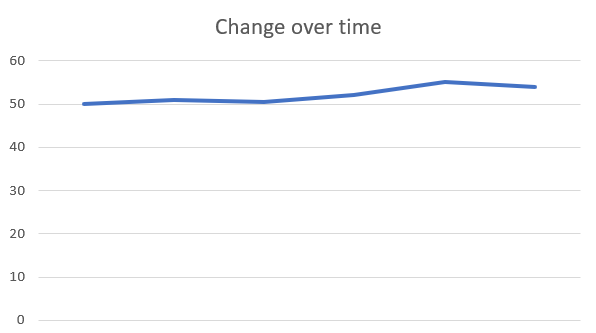
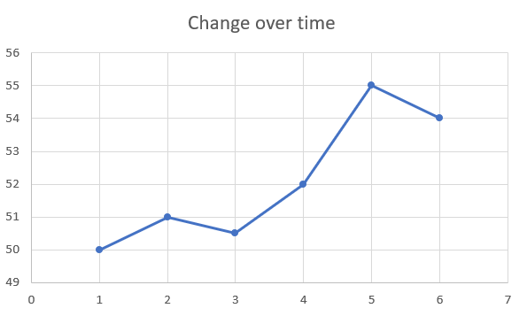

Humans are good at understanding values when there are round numbers involved. For example, we understand where a grade falls on a scale of 0 to 100, but if the scale were different, it is harder to think about. By making vizualization, we can take the guess work away from our brain and allow it to interpret an image. We can see the differences in height or size and make judgements this way. If the data is not something we experience daily, like a grade, we will be able to understand it quickly with a vizualization.
Cairo states you should map data into visual properties. You have to think about what you are trying to convey before you can pick what type of graph to use. The graphs will differ if you are going for general ideas or specific relationships. You can create multiple vizualiaztions to test which ones will work best.
Creating graphs for general estimates is good if you are trying to let the reader see a general pattern. If you want to show the big picture and the details you can include two vizualizations. Be critical when picking agraphic form. What the data is showing matters.
 In the graphs shown above, the scale for the x values matter. If you start at zero, there is a slight variation in the line over time. In the second graph, the x scale starts at 49 and the data is much more spread out. Depending on what you are trying to describe, the second graph may be misleading. People may believe that a great change had taken place than there was. This is because we are used to seeing graphs start at zero, so our brain makes incorrect assumptions.